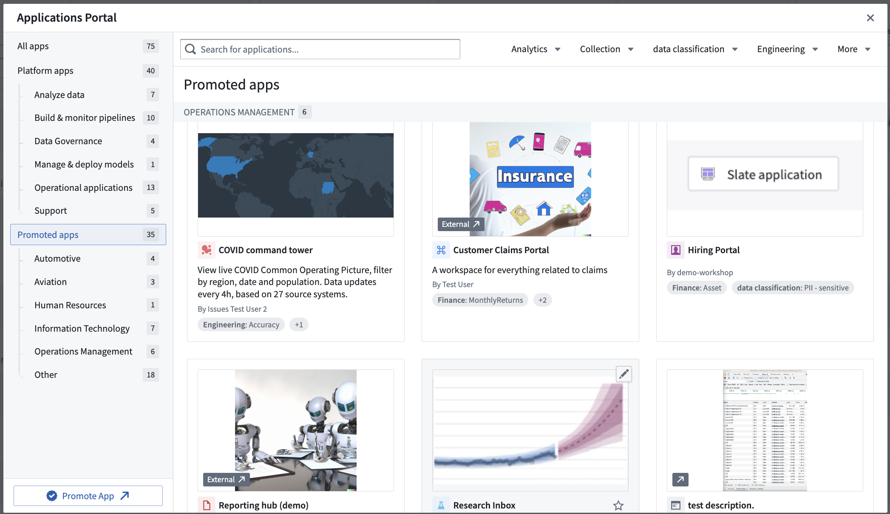

Applications Portal is a tool for discovering and accessing all apps in Foundry. This includes both (1) core Foundry platform apps and (2) trusted custom apps that admins promote to Applications Portal.
You can open Applications Portal by selecting the Applications Portal icon in the left sidebar. You will be able to view any application built in Workshop, Slate, or Carbon that you have promoted. You will also have quick access to all Foundry platform apps.
You can "pin" your favorite apps to the left sidebar for easy access. Select the star icon next to the application's name from the Applications Portal or when you are editing the application. Once pinned, a section called Promoted Apps will appear in the Foundry sidebar with a list of your favorite promoted apps.

Permissions for Applications Portal are based on filesystem permissions. If you have the Discoverer role, you will be prompted to request access.

Applications Portal has two modes of engagement:
:::callout{theme="neutral"} There is a single Applications Portal for each enrollment or tenant on a multi-tenant enrollment. The promoted apps that a user can view are limited to the spaces that belong to their Organization. If you have access to a shared space, you will also see promoted apps from that space. :::
A promoted application is an application that was marked by an admin as trusted and production-ready. Every promotion application has the following required metadata that will be displayed in Applications Portal and in the left sidebar:
Promoted apps receive the purple checkmark for trusted content, similar to items in the Data Catalog.
Admins can promote Workshop modules, Slate applications, Carbon workspaces, or external web links to Applications Portal. Permission to promote apps to Applications Portal is granted in Control Panel. You must have either the âOrganization Administratorâ or âUser Experience Administratorâ role. You also must be an editor or owner of an app to be able to promote it.
Promoted applications appear in Applications Portal for all users with at least the Discoverer role for the application and its space.
The apps promotion UI is available both in Applications Portal and in edit mode of Workshop and Slate (see example below).
Un-promoting a promoted application is also done using the promotion UI, by selecting the Unpromote button at the bottom left.
You can change the resource that a promotion references to release new applications in a controlled manner.

You can use collections and tags to categorize apps in Applications Portal and apply filters to only view certain apps.
Permissions to create collections and tags or add them to a promoted app are the same as the permissions to promote to Applications Portal, based on the roles of âOrganization administratorâ and âUser experience administratorâ in Control Panel.
Collections are displayed on the left sidebar as titles of sections in Applications Portal. They are used as the top-line category in Applications Portal to curate your experience. Collections are created and managed in the Data Catalog. Once you create a collection, you can add a promoted app to it from Data Catalog and from the filesystem.
Only collections that have promoted apps linked to them are displayed in Applications Portal, and only if you have access to view/discover these apps. If a collection has no promoted apps linked to it, or if you do not have access to any apps on the collection, it will not be displayed.
Tags are displayed as labels on the promoted apps cards and can be filtered from the top right of Applications Portal. You can create and manage tags from the Tags section of Platform Settings. Once they are created, they can be added to a promoted app on the promotion UI, as well as in the filesystem.
Only tags that have promoted apps linked to them are displayed in Applications Portal as filters, and only if the user has access to view/discover these apps. If a tag is not added to any promoted apps, or if a user has no access to any apps with that tag, it would not be displayed.
Foundry platform apps are tools like Quiver, Contour, Data Connection, Pipeline Builder, and more. You can configure the option to display or hide platform apps from users in Control Panel under the Application access tab. This allows you to show only certain sub-groups of apps in Applications Portal, as well as in the rest of Foundry.